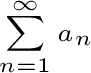
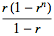
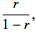
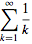

Partial Sums:
An infinite series will converge if the sequence of its partial sums is convergent.
Geometric Series:
- Each term differs by a common ratio, r. In other words, each term is the previous multiplied by the ratio.
- Convergent if |r| < 1, else divergent.
- The nth partial sum is given by 
- If the series converges, its sum is given by 
Telescoping Series:
The inner terms cancel. Convergent if the last term goes to 0.
Harmonic Series:

Always divergent.